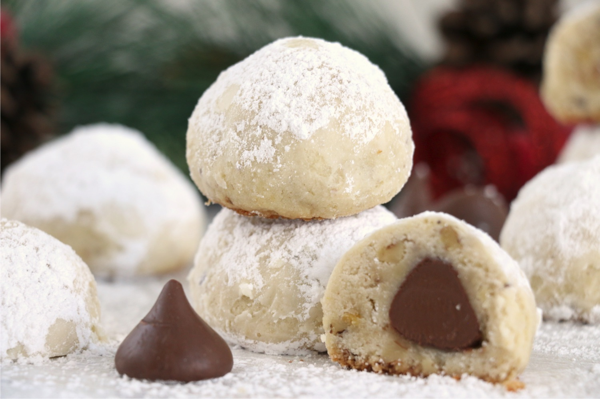

Hershey Kisses Snowballs

Description
While these cookies are not inherently Christmas-themed, they have made an
annual appearance in my family's holiday cookie tins. Maybe it is the dusting of
powdered sugar and ball shape, but these cookies have always suggested winter
holidays in my mind.
This recipe features a traditional Hershey's Kiss chocolate surrounded by a
shortbread cookie infused with nuts. No matter when you make these cookies, they are guarenteed
to bring a smile to the face of whoever eats them!
Ingredients
- 1 Cup Margerine (not butter)
- 1/2 Cup Sugar
- 1 teaspoon Vanilla
- 2 1/3 Cups Flour
- 3/4 Cups Chopped Nuts (any type)
- 1 Package Hershey's Kisses (unwrapped)
- Powdered Sugar for sprinkling
Steps
- Preheat oven to 350 degrees F
- In a stand mixer or using a bowl and hand mixer, cream together the butter and sugar until
fluffy and light in color (about 2 minutes). Using a silicone spatula, scrape down the sides and
bottom of the bowl.
- Add vanilla and mix until combined. Scrape down the sides and bottom of the bowl.
- With the mixer running at low speed, gradually add the flour until just combined. Scrape down the
bottom and sides of the bowl.
- Form 1 inch balls around each chocolate using your hands. Place on an un-greased baking sheet approximately
1 inch apart
- Bake 8-10 minutes until the cookie is set. These cookies should not change in color in the oven. If the cookies
brown, they have been overbaked.
- sprinkle with powdered sugar immeditely after removing from the oven. Sprinkle again before serving.